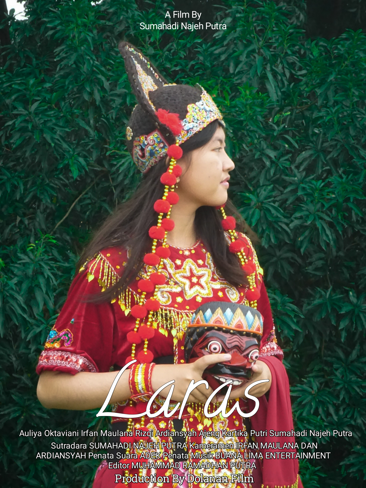
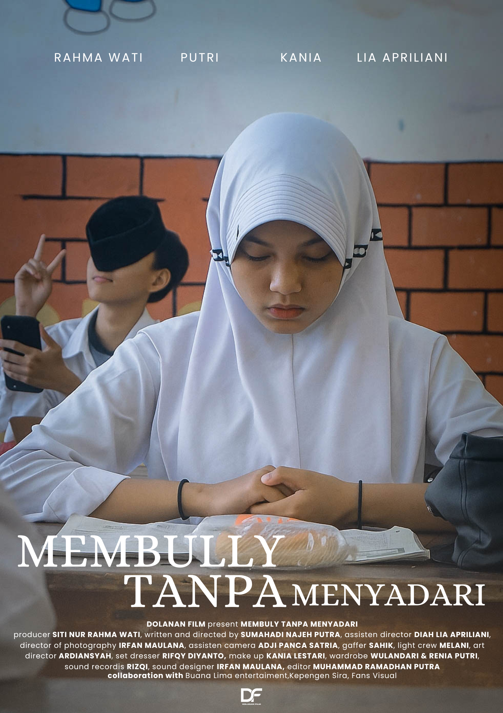
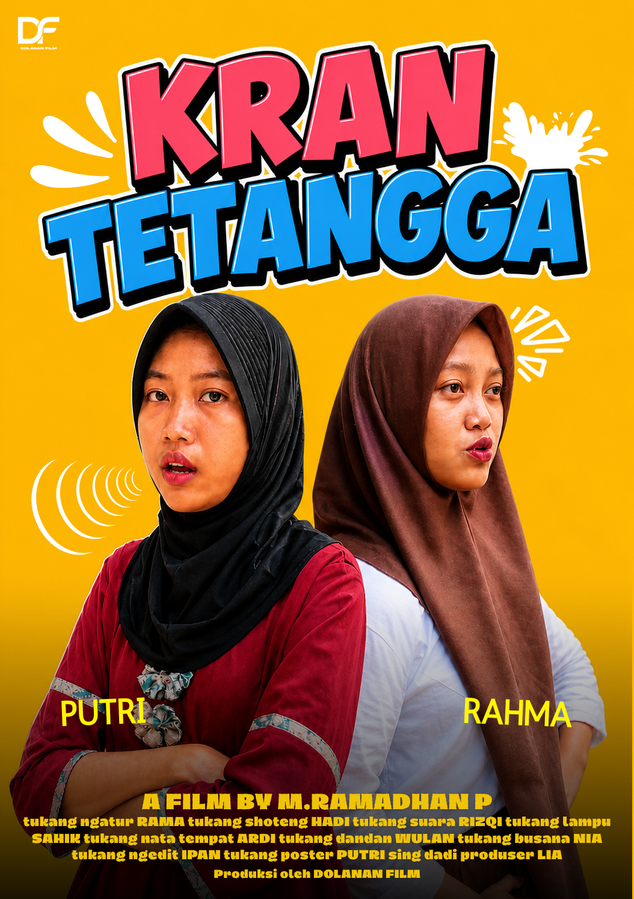

KARYA KAMI
History Poster Dolanan Film.

2022
LARAS
Film Pendek - Ketertarikan pada Tarian Topeng Kelana.

2023
LUKISAN MASA KECILKU
Film Pendek - Tentang bimbingan anak tanpa kekerasan.

2023
MEMBULLY
Produksi film oleh Dolanan Film.

2024
KRAN TETANGGA
Produksi film oleh Dolanan Film.